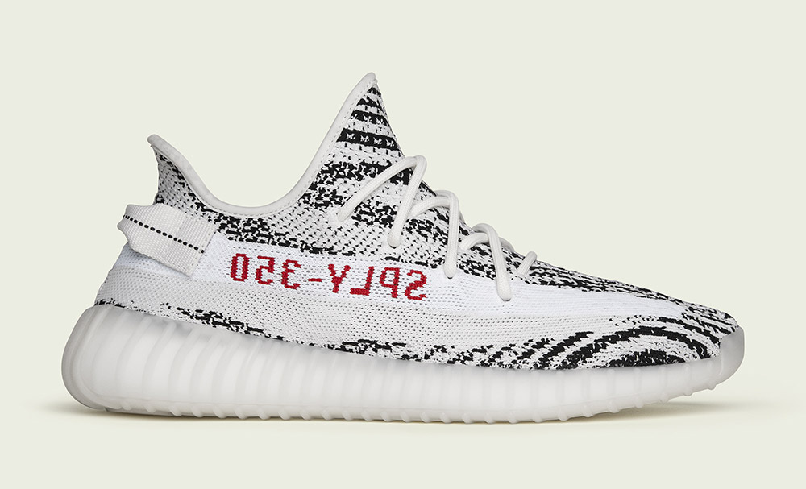

Bonjour, je suis Romain
Bonjour, je suis étudiant à l'EMLV. Je suis un jeune de 18 ans ouvert au monde et tourné vers les autres. Fraichement titulaire d’un baccalauréat économique et social, j’ai toujours été intéressé par le monde du commerce et de l’entreprise.
Découvrir l'EMLVEngagement
Je suis ouvert au monde et tourné vers les autres. Durant mes années lycéennes, j'organisais avec des camarades des actions pour l'épicerie sociale de Rueil Malmaison. À titre d'exemple, en Décembre 2020, nous avons récolté 36 cartons de biens divers. Par ailleurs, ma classe de terminale a participé à l'opération "boïtes de Noël" à destination des amis des Petits Frères pauvres de Nanterre. J'ai alors emmené tout le lycée avec moi, plus de 50 boîtes ont été confectionnées. Enfin, depuis de nombreuses années je donne mes vêtements trop petits à enfance partenariat Vietnam. L'association procède ensuite à des ventes dont les bénéfices servent à améliorer les conditions de vie des enfants dans les orphelinats au Vietnam. L'argent récolté sert également à assurer un suivi médical pour tous ces enfants (vaccins notamment).
Culture et loisirs
Je suis quelqu'un de très curieux et très ouvert à la culture et aux sports avec près de 9 ans de théâtre et plusieurs années en club de rugby car il est aussi, voire plus, important de développer son esprit que son corps. J'éprouve un réel intérêt pour les sports collectifs notamment le foot et le rugby, cela me permet de partager de bons moments de convivialité, de développer un esprit d'equipe et d'être compétitif également. Je suis aussi très cinéphile et avec un grand amour pour la musique que ce soit des années 70 avec Queen ou les Beatles à de nos jours avec du rap et de la pop en passant par des bandes-originales de films et d'animés. Je possède aussi un second compte Instagram spécialisé dans la photographie, toutes faites par moi-même uniquement et que j'alimente au grès de mes envies. Voici quelques exemples:


Mode
J'adore la mode et ce qu'elle apporte dans notre société. J'ai pars ailleurs fait mon TPE en terminale sur l'nfluence de la mode sur les jeunes, un sujet passionnant qui est réellement d'actualité et qui touche une quantité importante de jeunes et d'adolescents. Je suis un féru de chaussures, toutes plus rares les unes des autres, avec chacunes leurs propres histoires comme avec la Jordan 1, modèle iconique et intemporel de 1985, ou avec les Adidas Yeezy Boost et des courbes plus actuelles et modernes qui permet de se démarquer avec style et originalité.
